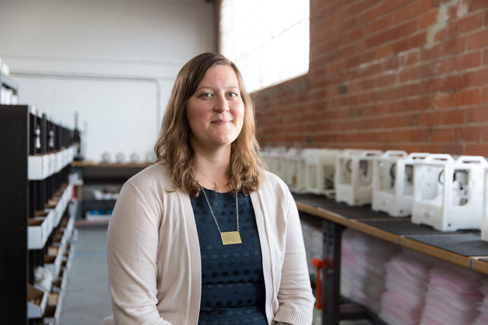

Do you know that high-achieving women leaders are 1.5 times more likely than men at the same level to think about downshifting or leaving their positions because of “burnout”?
It’s a sobering thought for corporate organizations that has been brought into closer focus by
the additional pressures of the pandemic.
Women in leadership positions often feel alone, lonely, even guilty because of the success they’ve achieved professionally. Yet, most face substantial challenges establishing work-life balance in the face of incredibly busy schedules.
Frequently, they benefit from help optimizing their input and influence both in the workplace and as life partners, parents, and participants in their communities.
With the right access to emotional support and accountability grounded in mutual understanding and experience, they’re able to give more to the world professionally and philanthropically.
10 Women Who Changed The Tech World
1. Danielle Applestone

Danielle Applestone, founder and CEO of Daughters of Rosie, and former CEO at Bantam tools is working to
bring women into the growing backlog of well-paying jobs in American manufacturing with a purpose for
advancement and benefit to address the labor crisis in the American manufacturing sector in.
She developed the Other Machine, a desktop CNC machine with user-friendly machine control software
funded by DAPRA.
here to watch her interview
2. Crystal Chao

Crystal Chao is AI/Robotics technology leader whose expertise in AI for human-robot
interaction including social robotics, conversational systems, design or visualization tool,
etc. She oversees a team at Huawei that operates in Silicon Valley, Boston, Beijing, and Tokyo
as the Company’s chief scientist and Global lead of Robotics Projects.
3. Emily Cross
Emily Cross, a cognitive neuroscientist based her research using complex action learning
paradigms, social interaction manipulations, and robots, in combination with brain imaging and
brain stimulation, to explore how brain and behavior are shaped by different kinds of experience.
Currently, she works as the principal investigator for “Social Robots” 2016-2021.
Watch her interview below
Interview Emily Cross 16oct 2013 from Humanities UU on Vimeo.
4. Alice Agogino

Alice Agogino is the CEO of Squishy Robotics, Inc., and Roscoe and Hughes are professors of
Mechanical engineering at UC Berkeley. The Squishy robots developed from research at BEST Lab or
Berkeley Emergent Space Tensegrities Lab, are instantly deployable mobile sensing robots for disaster
rescue, remote monitoring, and space exploration. She received the Presidential Award for Excellence
in Science, Mathematics, and Engineering Mentoring in 2018.
5. Sussane Bieller

Sussane Bieller is the general secretary of the International Federation of Robotics, a non-profit
group that represents more than 50 national robot associations and manufacturers of industrial robots
from over twenty countries. She managed projects for the European Robotics Association’s EUnited Robotics
and was elected among the ‘top 10 Women in Robotics Industry’.
6. Cynthia Breazeal

Cynthia Breazeal is a professor of media arts and sciences at MIT, where she founded and directs the
Personal Robots group at the Media Lab. She is a pioneer of social robotics and human-robot interaction.
Her recent work focuses on the theme of “living with AI” and understanding the long-term impact of social
robots that can build relationships and provide personalized support as helpful companions in daily life.
7. Heather Justice

Heather Justice, a software engineer, holds an ideal position as Mars Exploration Rover Driver. After
watching the first Rover land on Mars as a 16-yeat old, she decides to pursue her career in computer
science and engineering. She did her internships at three different NASA locations and also worked in a
variety of research fields. She pursued her M.S. from the Robotics Institute at Carnegie Mellon University
in 2011.
8. Ayorkor Korsah

Ayorkor Korsah is the head of the Department of Computer Science at Ashesi University in Ghana.
She is also a robotics professor at Asheshi University and a founding member of the group that shared
resources for robotics in 2012, the African Robotics Network.
Interview with Accra-based algorithm designer, AI and robotics educator Ayorkor Korsah from AfridesignX on Vimeo.
9. Madeline Ganon

Madeline Ganon, also known as ‘The Robot Whisperer’ specializes in convincing robots to do from
transforming giant robots into living, breathing, mechanical creatures. She is thinking of new ways to
communicate with technology. Her interactive business, Minus, received an Honorable Mention for the 2017
Ars Electronica STARTS Prize.
10. Kanako Harada

Kanako Harada, the project manager oversees the Cabinet Office of Japan’s ImPinitiativetive, “Bionic
Humanoids Propelling New Industrial Revolution.” She held positions with Hitachi Ltd., the Japan
Association for the Advancement of Medical Equipment, and the Italian Scuola Superiore Sant’Anna. Her
study focuses on surgical robotics and surgical skill evaluation.